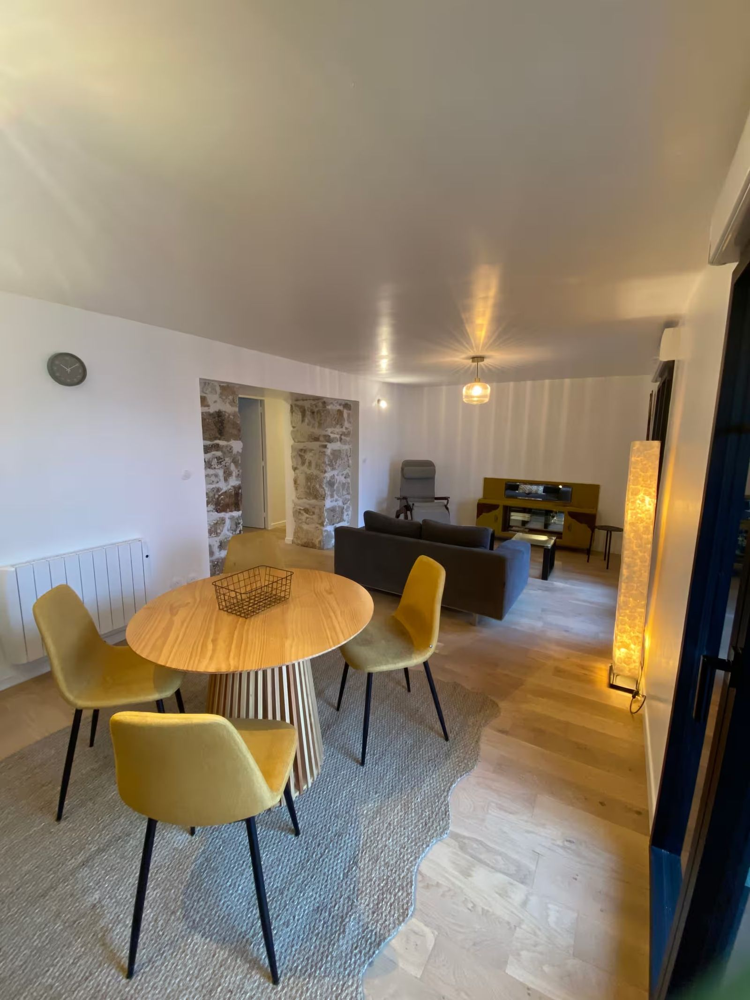
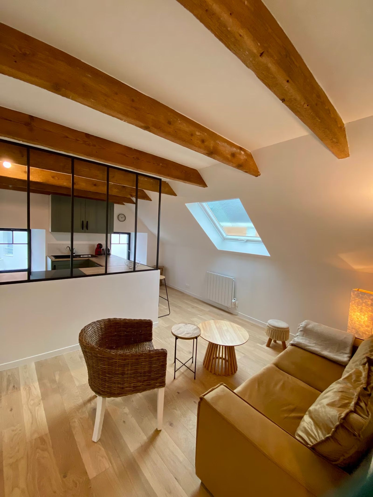
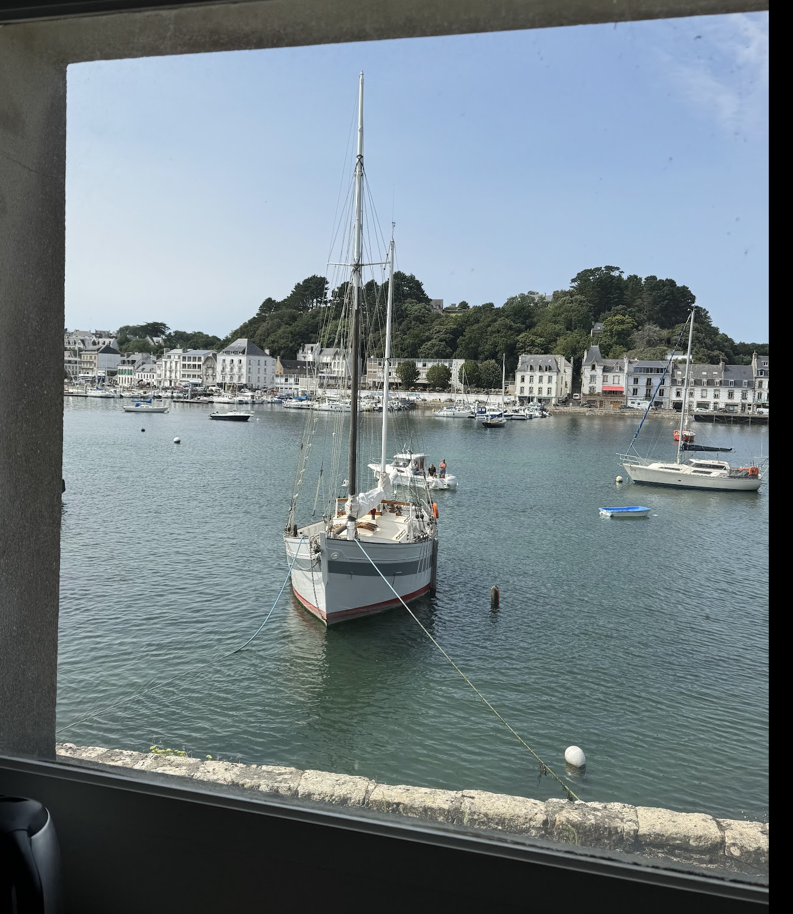
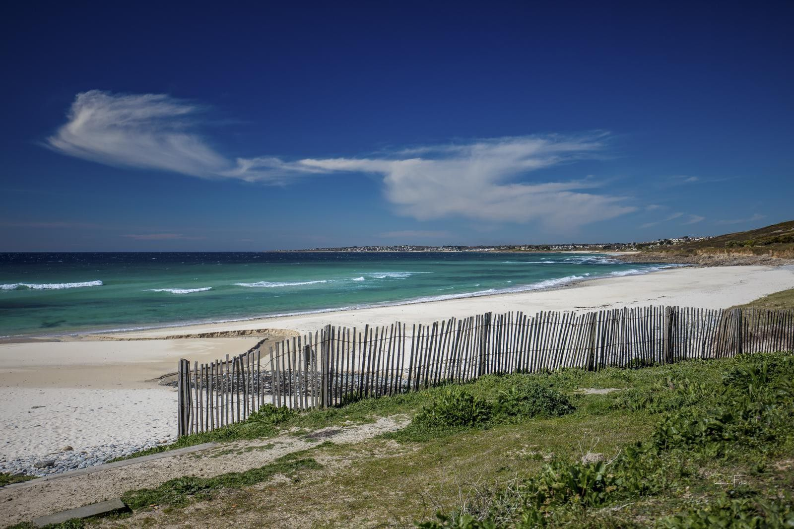
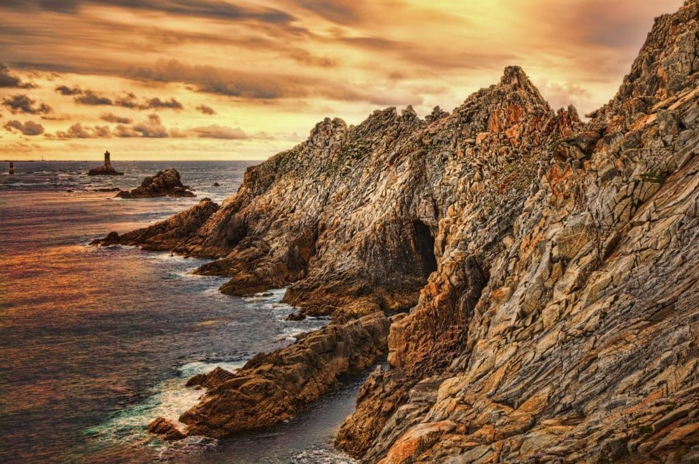
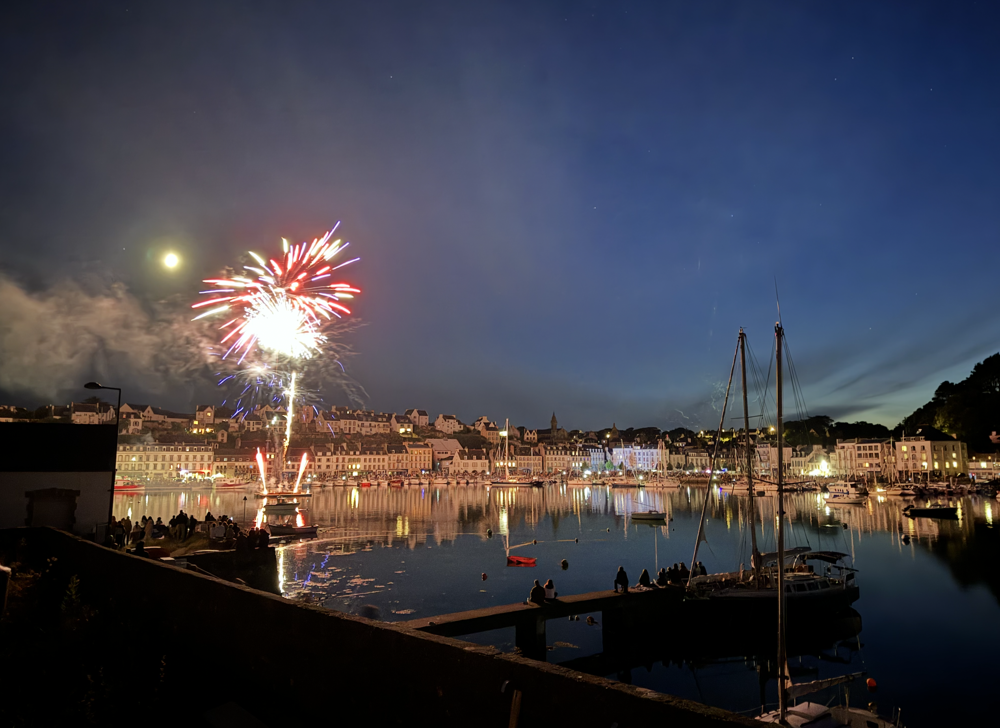
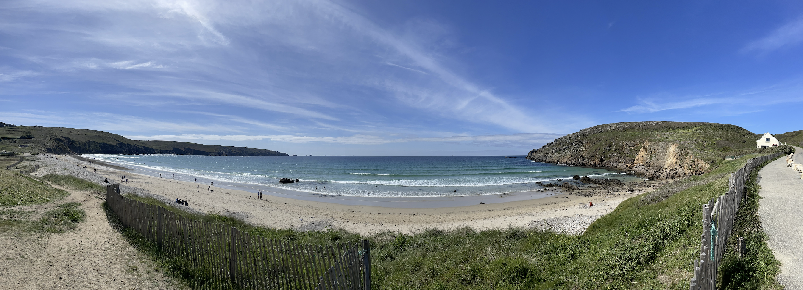

Séjourner à la Voilerie
Des appartements lumineux, pierre apparente, bois et vues mer.


Des appartements uniques, lumineux et confortables, dans une bâtisse historique au bord de l’estuaire du Goyen.
Situé à l’embouchure de l’estuaire du Goyen, Le Clos de la Voilerie regarde Audierne et le port. Une adresse simple, élégante, idéale pour respirer l’air salé de l’Atlantique.

La bâtisse de 1869 a traversé les usages et les générations : commerce maritime, ateliers de voiles, appartement familial et bistrot de marins.
Construction de la bâtisse au bord de la cale.
La vie portuaire anime les quais et la résidence.
Le bâtiment conserve son âme entre Audierne et Plouhinec.
Renaissance en appartements confortables et élégants.






45 rue de Locqueran, 29780 Plouhinec · Séjours vue mer au Clos de la Voilerie